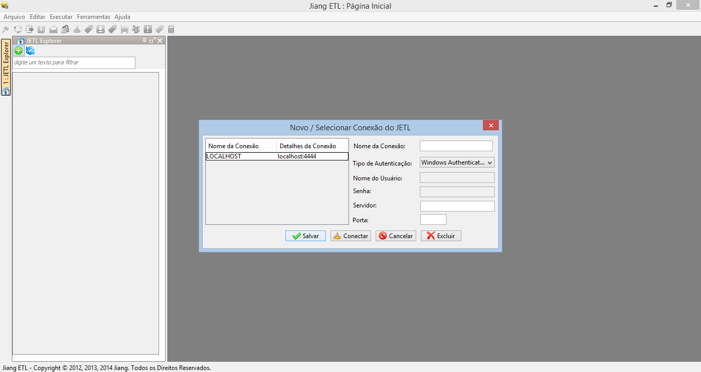

Jetl
JetlO que é ?
JETL é um sistema que surgiu durante a elaboração de um TCC (Trabalho de Conclusão de Curso) com o objetivo de apresentar um sistema que atenda aos requisitos mais comuns na automatização de tarefas relacionadas ao ambiente de TI (sem os tradicionais custos com licenças).
Como resultado do levantamento de requisitos, foram desenvolvidos as seguintes funcionalidade (em constante evolução):
- Script´s de carga, como por exemplo loader (Oracle SQL Loader e SQL Bulk Insert);
- Script´s de transferências de dados entre bancos de dados, como por exemplo copiar dados de Oracle para SQL Server sendo necessário apenas cadastrar a consulta SQL da origem e especificar a tabela de destino (sem se preocupar com as particularidades de cada banco de dados);
- Script’s de exportação de relatórios (a ideia é apenas cadastrar a consulta e especificar nome do arquivo, delimitar, etc. Não será necessário conhecer comandos específicos de cada sistema);
- Script’s de Transmissão (será possível realizar a transferência de arquivos entre diversos ambientes e diversos protocolos como SSH, FTP, SFTP, Network Share sem ter que ficar programando;
- Script’s de envio de e-mail;
- Script’s de envio de SMS;
- Execução de Procedures e comandos SQL em geral;
- Execução de script’s shell e comandos direto no sistema operacional;
- Permitir o acompanhamento on-line da execução;
- Geração de Log padronizado para todos os processos;
- Permitir visualização gráficas dos processos;
- Permitir realizar o encadeamento dos processos (com condições e horários);
- Permitir uma visão unificadas das cadeias de execução;
- Permitir obter histórico e execução dos Jobs;
- Gerenciamento padronizado de conexões com os diversos ambientes em que BI possui interface;
- Simplificar atividades de execução, interrupção e re-execução de Jobs, Cadeias ou parte das Cadeias;
- Realizar rebuild de índices;
- Realizar download e arquivos;
Ao baixar o arquivo JETL.zip, você receberá os módulos Client e Server. Para executar é só seguir os passos abaixo:
Client
$ unzip JETL.zip
$ executar JETL.exe (em ambientes windows)
Server
$ unzip JETL.zip
$ executar server.bat (em ambientes windows)
$ executar serverJETL.sh (em ambiente linux)
Visão Geral
A arquitetura do JETL pode ser conferida abaixo:

Screenshots

Autores e Contribuidores
Atualmente o JETL conta com uma equipe de entusiastas em tecnologia liderada pelo Isaac Morais. Com o objetivo de continuarmos em evolução constante, estamos sempre dispostos a receber novas solicitações e avaliarmos a possibilidade.
Caso tenha alguma sugestão ou queira entrar em contato, é só enviar um e-mail para jiangetl@gmail.com.